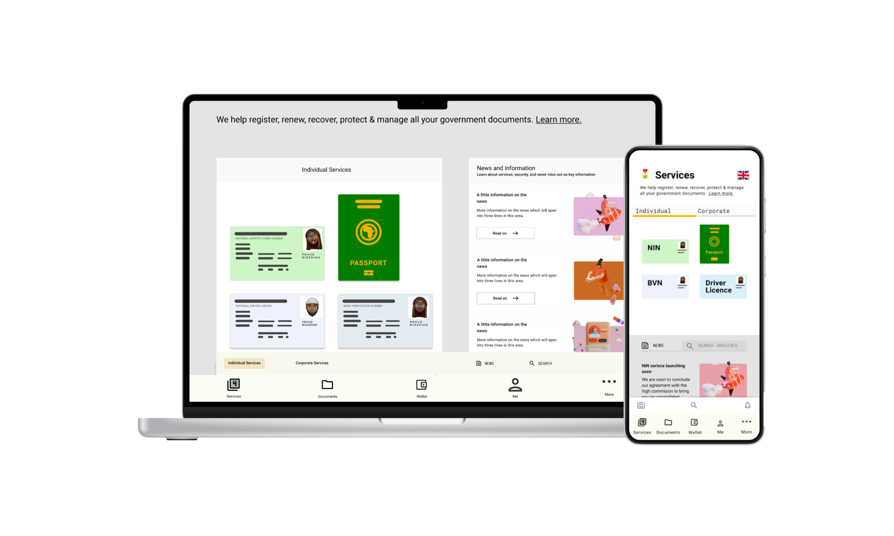

GREEN WALLET
A diaspora platform for safer, easier, and faster government document management—identity, renewals, and support in one place.


N9
A five-day design sprint—Map, Sketch, Decide, Prototype, Test—to validate a Fitbit-style racehorse monitor.

Zi Pay
A points-based mobile wallet to track spending, earn rewards at local businesses, and share purchases with friends.
OTHER PROJECTS
A little bit of history